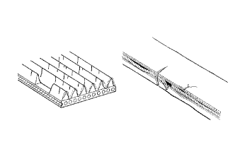

ПРИВОДНОЙ РЕМЕНЬ > ПРОВЕРКА |
| 1. ПРОВЕРЬТЕ ПОЛИКЛИНОВОЙ РЕМЕНЬ ВЕНТИЛЯТОРА И ГЕНЕРАТОРА |
|  |
Убедитесь в отсутствии износа, трещин и других признаков повреждения.
При обнаружении следующих дефектов замените вентилятор и поликлиновой ремень генератора.
 |
Убедитесь в том, что приводной ремень правильно располагается в углублениях шкива.
| *1 | ПРАВИЛЬНО |
| *2 | НЕПРАВИЛЬНО |